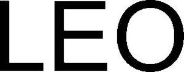

Trade Mark Journal No.2025/031 1 August 2025
WO0000001851653 (9)
Office of origin: Germany
Date of International Registration:13 February 2025
Date of designation in the UK:
13 February 2025

International priority date claimed: 16 August 2024
(Germany)
- Class 9
- Pressure gauges, pressure measuring apparatuses, electronic pressure sensors, pressure recorders, pressure transmitters, and pressure indicators, in particular those with digital displays; pressure gauges, pressure measuring apparatuses, electronic pressure sensors, pressure recorders, pressure transmitters, and pressure indicators for measuring and/or recording barometric pressures for weather forecasting, altitude measurement and scientific research; pressure gauges, pressure measuring apparatuses, electronic pressure sensors, pressure recorders, pressure transmitters, and pressure indicators for measuring negative pressure or vacuum conditions; pressure gauges, pressure measuring apparatuses, electronic pressure sensors, pressure recorders, pressure transmitters, and pressure indicators measuring pressure and temperature; electronic devices that display pressure and/or temperature values and further offering at least one additional function, for example data recording, switching-functions, alarm-functions, wireless transmission of data, wired output of digital signals and/or wired output of analog signals; electronic devices for measuring the pressure difference between two points; electronic devices for monitoring air filters; electronic devices for measuring flow velocity of gases and liquids; electronic devices for measuring the liquid pressure determined by the height of a liquid column above a measuring point.
KELLER Gesellschaft für Druckmesstechnik mbH
Representative: FLACH BAUER & PARTNER Patentanwälte mbB, Adlzreiterstr. 11, 83022 Rosenheim, GERMANY